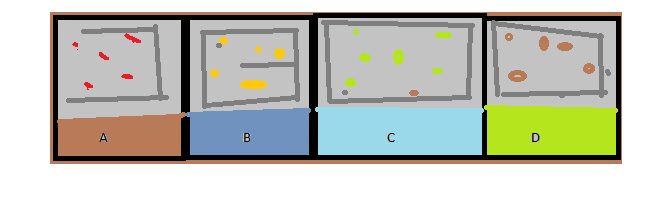
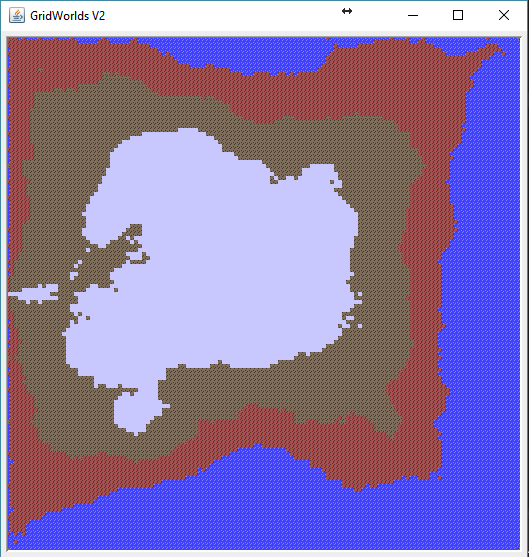

Bjorn Mathisen
3/1/2017 - CSCI 310 - Principia College
Having changed my mind about which algorithm I would be using for this project three times. I have decided to list the first two
concepts in a brief description and go further in-depth about my final chosen method of execution.
Idea 1:
My original concept was centered around the idea of building my world in pre-programmed chunks and generating random segments
to go above these blocks. For example, I planned on dividing my world vertically into 4 segments each with a randomly chosen
letter designating them. ie 'A','B','D', etc. Above these designation letters I would have 'pastures' holding a random animal
with random placement inside the pasture being based on its neighbor’s location. I scrapped this idea once I learned of the character limit.
Idea 2:
My second idea was centered around the Mandelbrot set. An algorithm centered around the comparison of complex numbers that when plotted
in 2 dimensional space would produce a infinity recursive pattern. I scrapped this concept due to limited understanding of how to employ it

Final concept
Originally, midpoint between concept 1 and concept 2 we were introduced to Fractal sets and how to use them in terrain generation.
I found this concept quite interesting during class and I decided that if I did not use it for this assignment that I would attempt
it later during my own time. However, after doing some research into the subject I found the concept quite doable and somewhat easy to
understand. Using the following pseudo code I was able to write my own algorithm following the diamond-square technique.
While the length of the side of the squares is greater than zero
{
Pass through the array and perform the diamond step for each square present.
Pass through the array and perform the square step for each diamond present.
Reduce the random number range.
}
After generating a 2D array with differences ranging from 4 -|+ the original seed value, I was able to generate a height map
and using this height map place my objects within the world. Creating landmasses resembling mountains, or hills depending on the placement of the objects
